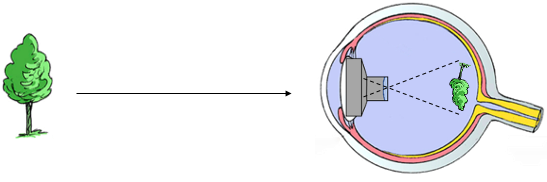

Although treatments for corneal blindness exist today, they face serious limitations. For example, corneal transplantation is limited by donor tissue shortages, especially in developing countries. More significantly, there is a high risk of rejection when the cornea has vascularized. To tackle these issues, we are constructing a projector system that places the visual source inside the eye and projects images from the outside world directly onto the retina. We use visual evoked potentials (VEPs) elicited in the primary visual cortex in response to visual stimuli to objectively measure the quality of restored vision.
This novel strategy could restore high quality vision without corneal clarity. It not only obviates the need for donor corneal tissue and reduces the risk of complications, but also opens up new possibilities for patients with incurable corneal blindness.

The artificial cornea, or keratoprosthesis (KPro) is a clinically useful method that replaces the opaque cornea with a donor corneal graft sandwiched between nonbiological components made from hard acrylic. We are synthesizing and testing advanced materials and designs for keratoprostheses with the goal of reducing complications and easing surgical implantation. A one-piece flexible clear acrylic keratoprostheses that does not require donor cornea could have important clinical implications in minimizing surgical complexity and reducing intraoperative and post-operative complications.